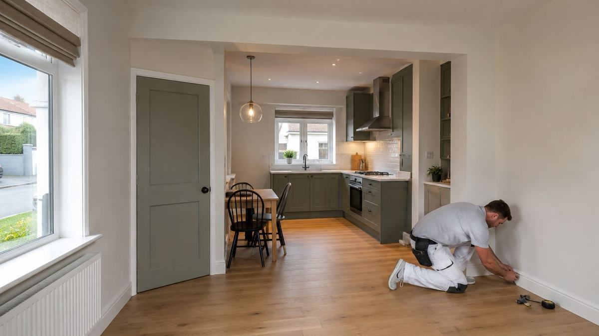

Home / Services
Painting & decorating
Interior and exterior decorating for homes, offices and commercial premises across Limerick and Kerry.
Preparation is the job
Anyone can apply paint. The difference between a repaint that still looks right in five years and one that flakes within two is almost entirely what happened before the first coat - filling, caulking, sanding, stabilising powdery surfaces, and treating damp or rot rather than sealing it in.
Exterior work here has a short weather window
Persistent damp, wind-driven rain and unreliable dry spells affect product choice and timing as much as technique - particularly on fascias, soffits, render and whichever elevation takes the weather.
Commercial repaints do not have to close anything
Offices, retail units and premises can be done in phases or outside trading hours. Most of the planning is about sequence, not paint.
How the job runs
In order, and in writing.
Inspect and identify
Including anything that is a repair rather than a decorating problem.
Protect and mask
Floors, fittings and everything that is staying.
Prepare
Fill, caulk, sand, stabilise. This is where the time goes.
Repair first
Damaged plaster, rot and damp addressed before paint, not under it.
Coat properly
Correct number of coats for the surface and product.
Clean up
Site left usable, not just finished.
Before you get quotes
What determines the price.
We do not publish figures, because a figure without a site visit is a guess. These are the variables that actually move the number - worth understanding whoever you end up using.
Condition of the surfaces
A sound wall needing two coats and a wall needing full preparation are different jobs at the same square metre.
Access and height
Ladders, towers or scaffold for exterior and stairwell work.
Number of colours and cutting-in
More colour changes and more detail means more time.
Interior versus exterior
Exterior work carries weather risk and more preparation.
Out-of-hours working
Evening or weekend commercial work to avoid disruption.
Specification
Trade versus premium products - we will say where the upgrade actually lasts longer.
When you don't need us
If the surface is sound and you simply want a colour change in one room, that is a very doable weekend. Where we earn our money is preparation-heavy work, exteriors, height, and anything where the last paint job failed and nobody has established why.
Questions
Straight answers.
Do you do preparation or just paint?
Preparation is included as standard - filling, caulking, sanding and repairing damaged plaster. It is not an optional extra.
Can you work outside business hours?
Yes, commercial decorating is often scheduled for evenings or weekends.
Do you supply the paint?
We can supply everything, or work with a specification you have already chosen.
What about damp patches that keep coming back?
Those are a repair problem, not a paint problem. Painting over them wastes your money - we would look at the cause first.
Do you cover Kerry?
Yes, Limerick and Kerry.
Where we work
Limerick and Kerry.
Based at the Old Creamery Enterprise Centre in Ardagh, Co. Limerick, working across the county and into Kerry.
Limerick City · Ardagh · Adare · Newcastle West · Rathkeale · Askeaton · Croom · Kilmallock · Abbeyfeale · Foynes · Patrickswell · Castleconnell · Caherconlish · Bruff · Dromcollogher · Pallaskenry · Glin · Shanagolden · Athea · Annacotty · Murroe · Cappamore · Tralee · Killarney · Listowel · Castleisland · Abbeydorney · Tarbert
Tell us what needs doing.
Free site visit, free assessment, itemised quote. No obligation either way.
Something urgent? Call - 24/7 emergency call-outs.